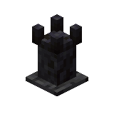
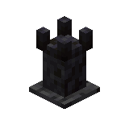

Tomes
Tome Altars
Tome Obtaining
Tome Obtaining - Part 2
Tomes allow the Altar of Enchanting to enchant treasure enchantments onto items.
Tomes come in different types and each type can be used to unlock one specific enchantment.
Each type may be obtainable in a different way.
Vanilla tomes generally are contained within the structures that they were spawning in anyway.
In order for the altar to be able to use the tomes, you need to put these on a .
Simply place the near the altar of enchanting and right click the
with a tome.
Here's a list of all tomes and where you can get them.
- Black Tome - found in Pillager Outposts, contains Capturing.
- Bind Tome - found in Pillager Outposts and Woodland Mansions, contains Curse of Binding.
- Chill Tome - found in Igloos, contains Frost Walker.
- Dim Tome - Contains Unshiny. Found in Bastions. What irony.
- Echo Tome - found in Ancient Cities, contains Swift Sneak.
- Fuse Tome - found in Strongholds and End Cities, contains Mending.
- Greed Tome - gotten by trading with Librarians, contains Scavenger.
- Gust Tome - found in End Cities, contains Updraft.
- Nether Tome - gotten by trading with Piglins and found in Bastions, contains Soul Speed.
- Storm Tome - gotten as a reward from ominous vaults, contains Wind Burst.
- Vanish Tome - found in Pillager Outposts and Woodland Mansions, contains Curse of Vanishing.